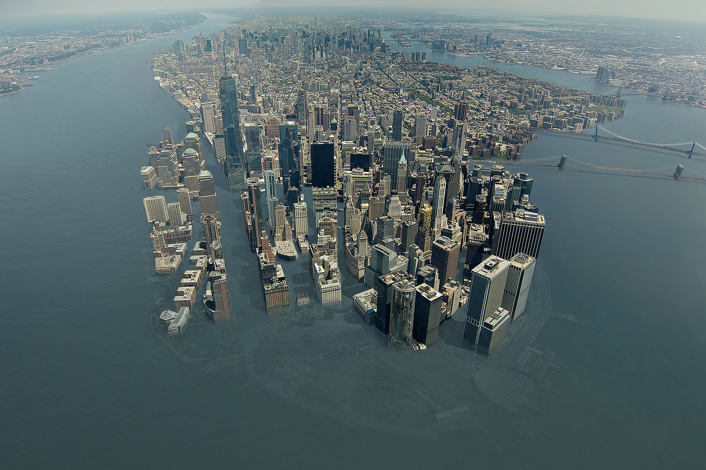
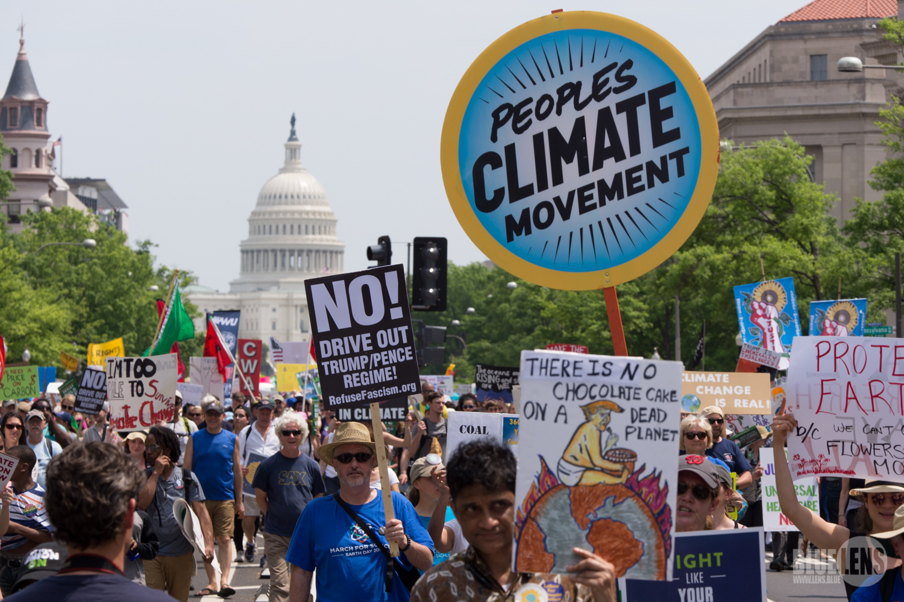

Cultural Studies and Climate Change
“It could be the COLDEST New Year’s Eve on record. Perhaps
we could use a little bit of that good old Global Warming.” Donald Trump
First Reformed (2017) by Paul Schrader
Now is a time of dire emergency for the Earth, a time when drastic and dramatic measures must be taken so that our planet remains habitable.
A cultural studies approach to understanding the challenge of climate change can foster a deeper understanding of the human social systems that cause it and possibilities for meaningful action.
Cultural studies draws on cultural, political, and economic theory to analyze discourse, culture, and behavior with a view toward voice and democratic participation. Cultural studies includes critical examination of the production and flow of culture in national and international capitalism, the naturalization and reproduction of inequality, as well as political resistance and the rise of traditional and new social movements.
This course brings together tools from the humanities and social sciences to consider: the history, politics, and ethics of global warming; imagined representations of warming in the future and their relevance to the present; and, ways to mobilize people to address climate change via social movements. Students will design and undertake a significant climate change Action Project or Projects.
Geologists now identify our geological epoch as the Anthropocene, a time when our planet is dominated by humanity. But that domination is not equal among all people. A cultural studies perspective might more specifically say we are living in the Capitalocene; as Jason Moore describes:
The Anthropocene makes for an easy story. Easy, because it does not challenge the naturalized inequalities, alienation, and violence inscribed in modernity’s strategic relations of power and production. It is an easy story to tell because it does not ask us to think about these relations at all. The mosaic of human activity in the web of life is reduced to an abstract Humanity: a homogeneous acting unit. Inequality, commodification, imperialism, patriarchy, racial formations, and much more, have been largely removed from consideration. ... Are we really living in the Anthropocene, with its return to a curiously Eurocentric vista of humanity, and its reliance on well-worn notions of resource- and technological-determinism? Or are we living in the Capitalocene, the historical era shaped by relations privileging the endless accumulation of capital? (Capitalocene)
This course, designed to meet requirements of WMU's new minor in Climate Change, is experimental and the syllabus provisional and under development.
Course Success
Since the class is discussion-based, attendance and preparation are essential to your own learning and to the learning of your classmates. Missing any classes will affect your learning. Missing 3 classes or more will lower your grade and missing 5 classes may lead to failing. Study my philosophy regarding discussion, preparation, participation, attendance, grading, and learning!
Students in this course are expected to keep up with current events regarding the course theme. I urge you to take advantage of the WMU library making the NY Times available to WMU students for free.
Your final course grade will be an average of grades for the major assignments, listed and weighted below.
This course will follow WMU policies regarding academic honesty.
My office is 723 Sprau Tower, 387-2605. Office hours are before and after class and by appointment. You can always reach me via email.
Lynas, Mark. Six Degrees: Our Future on a Hotter Planet. (National Geographic, 2008)
Rich, Nathaniel. Odds Against Tomorrow (Farrer, Straus 2014)
McKibben, Bill. Radio Free Vermont. (Penguin, 2017)
Additional reading and viewing linked to this syllabus and/or provided by the professor.

Major Assignments
|
Class Participation (25%) Climate Justice Manifesto (25%) Cli-Fi Project (25%) Culture Jam (10%) Action Project (15%) |

Electronic Syllabus
Wed Aug 29: Introductions
Wed Sep 5: The Climate Change Crisis
1. Read carefully through the entire on-line syllabus. Bring any questions about the syllabus and assignments to class.
2. Join our class phone message system, Remind by sending this message, "@gbe96fb" to this number "81010" using your cell phone (your cell phone number will remain private, you can also send the message to 5863590468).
3. Read: Six Degrees, Introduction, at least two "degree chapters" including the one you are assigned to present, and read the last chapter ("Choosing Our Future").
4. Collaborate on Google Slides to create a presentation to convery the content of the chapter to the rest of the class. Send me the URL so I can post it here: 1 Degree, 2 Degrees, 3 Degrees, 4 Degrees, 5 Degrees, 6 Degrees.
Mon Sep 10: Climate Crisis: Where do we go from here?
1. Study: Dashboard of the Great Acceleration
2. Read Global Warming's Terrifying New Math by Bill McKibbon, Rolling Stone, 7-19-12.
3. Read selection from A World at War by Bill McKibbon, The New Republic 8-15-16.
4. Read: The Unihabitable Earth by David Wallace-Wells

Wed Sep 12: What Should We Do?
Bring Ideas to Class for Class and Individual Action Projects
Google Doc: Addressing Climate Change
Mon Sep 17: Extractivism
1. "Beyond Extractivism" Chapter 5 of This Changes Everything by Naomi Klein (2014).
2. "Blockadia" from Chapter 9 of This Changes Everything by Naomi Klein (2014).
3. Add to Addressing Climate Change, and do research on at least one idea.
Wed Sep 19: Capitalism and Climate Change
1. Read: From the Communist Manifesto, sections I & II & IV by Karl Marx (1848)
2. Read: Marxism and Environmental Crisis by John Molyneux
3. Read: Climate in Crisis Shows the Necessity for a Revolution by Adam Booth
Mon Sep 24: Global Perspectives
1. Read from Tropic of Chaos: Climate Change and the New Geography of Violence by Christian Parenti (2011) Table of Contents & Chapter 1 "Who Killed Ekaru Loruman?", Chapter 14: Golgatha Mexicana: Climate Refugees, Free Trade, and the War Next Door, Chapter 15 American Walls and Demagogues, and Chapter 16 Implications and Possibilities. Optional: India and Pakistan, East Africa
2. Conservative Perspectives on Climate Change: Bob Inglis, 6:00, 3512 Knauss Hall
Wed Sep 26: Work on Final Project
1. Share ideas: How can we at WMU call attention to the global impact/issues of climate change? Addressing Climate Change
Mon Oct 1: Care for Our Common Home
1. Read: Encylical Letter Laudato Si' by Pope Francis, On Care for Our Common Home (complete Word version) (EDITED Word Version)
2. Read: People's Agreement of Cochabamba (Word Version)
Wed Oct 3: Global Ethics of Climate Change
1. Read: "Contractualism and Climate Change" by Dr. Paul Clements, Department of Political Science
Mon Oct 8: Climate Manifestos Due
Tues Oct 9: Last Day to Register to Vote in November
Wed Oct 10: Work on Action Projects
Mon Oct 15: Failure to Imagine Climate Change
1. Read: Chapters 2, 17, 19, 32, 33, 34, & 36 from Don’t Even Think About It by George Marshall (2014)

Oct 17-21 Fall Break
Mon Oct 22: Imagining Climate Change, Con't
1. Read: Odds Against Tomorrow by Nathaniel Rich

Wed Oct 24:
Mon Oct 29: Short Stories
1. Read: Atcheson-"How Close to the Savage Soul, From Everything Change: “Into the Storm” (Canada), Rich-"Hermie,""May-"The Audit," Atwood-"Time Capsule Found on the Dead Planet" & Optional: From: Everything Change “The Grandchild Paradox,” “Acqua Alta” (Venice), “LOSD and Fount,” “Standing Still” (Madagascar), “On Darwin Tides,” (Malaysia), “Masks” (China), “Wonder of the World” (2016)
2. 7:00 pm Monday: Viewing of First Reformed in 2208 Dunbar
Wed Oct 31: Film
1. View: First Reformed(2017) directed by Paul Schrader
Mon Nov 5: Climate Change and Direct Action
1. Watch: No Easy Walk (video) & read: King's Letter From the Birmingham Jail, The Time for Direct Action on Climate Change in Now, Shut It Down, Direct Action, 198 Methods of Non-Violent Direct Action.
2. Optional: Read: How the Active Many Can Overcome the Ruthless Few by Bill McKibben

Tues Nov 6: Election Day
Wed Nov 7: Work on Final Project
Mon Nov 12: Cli-Fi Project Due
Wed Nov 14: Culture Jaming
3. Read & Study: Culture Jamming, samples, Brandalism
Mon Nov 19: Climate Change Activism
1. Study one of these organizations and prepare a powerpoint that describes them, their goals, history structure, methods, funding, future plans: 350.Org, Greenpeace, Go Fossil Free, Global Green, the Sierra Club, Carbon Fund, Idle No More, Union of Concerned Scientists, 1Sky, Climate Project, Focus the Nation, Blue/Green Alliance, Yale Project on Climate Change, Idle No More, Alliance for Climate Education, Citizen's Climate Lobby, Others
Wed Nov 21-25: Thanksgiving Break
Mon Nov 26: Taking Action
Read: Radio Free Vermont by Bill McKibben
Wed Nov 28: Action Project, Con't
Mon Dec 3: Radio Free Vermont Con't, Discussion of Culture Jamming & Presentations on Climate Change Organizations
Wed Dec 5:
Dec. 12-16 Finals Week
Wed Dec 12 2:45-4:45: Final Exam: Presentation of Culture Jam Projects
Climate Change Raps:Dear Future Generations (Lyrics), Man vs Earth, (Lyrics), Prince Ea; Climate Change, Coma Niddy; Climate Change, Make It Hot, Baba Brinkman
Trees Are Dying, Dr. Octagon (lyrics)
Climate Change Videos:
Ben and Jerry's Ice Cream & Climate Change